Table of Contents
Table of Contents
 Previous Chapter
Previous Chapter
Table of Contents
Previous Chapter
Unlike most performance tasks in machine learning where optimal or provably correct solutions to well defined tasks exist (e.g., classification, path planning, and puzzle solving), it is unclear how to empirically evaluate understanding tasks fully. The question of what it means for an agent to comprehend a story does not have a simple answer in objective terms. Solutions to comprehension tasks are often qualitative, in contrast to quantitative tasks such as mathematical problem-solving. Within mathematics a definitive answer to the question, "What is 2 + 2?" exists. However, to accurately answer the question "Why did Elvis smoke marijuana?" requires inference and subjective interpretation (Carbonell, 1981) with respect to Elvis' goals and values. Moreover, the context of the question may be relevant for understanding why the question is being asked and, therefore, for determining the best explanation; whereas, the context is irrelevant to answering the addition question.(1) For instance, the most relevant answer may be "Because Elvis is on a diet" if, prior to the question, the reasoner is told that Lynn just baked pot brownies. No absolutely correct answer exists. Rather, many answers at different levels of specification can suffice depending upon the context, the question, and the knowledge of the reasoner (Ram & Leake, 1991). One contribution of this research is to provide a quantitative measure that de-emphasizes complete and consistent explanations. Instead, it assigns "partial credit" when evaluating how programs understand and explain the input they experience. But more important is to evaluate how an understanding system learns, that is, how it improves its ability to understand.
The Meta-AQUA implementation tests the theory of introspective multistrategy learning presented in the previous chapters by providing a specific commitment to the concepts within the theory. But the assertion that the implementation tests the model immediately raises the questions "In what way can it be considered a test, and what are these commitments?" That is, how does the program validate the theory, and how can it be said to be falsifiable? The implementation effort by itself is falsifiable in a sense. If the theory cannot be implemented by the researcher, then the theory can be said to be underspecified. But although the last chapter showed that the theory passed this basic falsifiability test, this chapter presents a more rigorous hypothesis, complete with a null hypothesis that can falsify the theory if accepted (see Section 9.1.1.2).
However, the theory is difficult to validate completely and with confidence. It is not a strict psychological theory designed to explain a particular set of known human data, nor is it a computational theory embedded within a conventional machine learning paradigm having an agreed-upon evaluation criterium. A cognitive psychologist cannot simply run a couple of human experiments that prove or disprove its validity conclusively. The computer scientist cannot simply run its learning algorithm against a standard test suite (e.g., domain theories from the UC Irvine Machine Learning Repository) in order to compare it to other learning algorithms, nor can the theoretician derive an average-case mathematical model to predict the algorithm's accuracy and then compare it to actual behavior (e.g., Pazzani & Sarrett, 1990). Rather, the phenomena of interest (introspections and their role in learning) are at a large grain size; the performance task (story understanding) is subjective; the hypothesis (introspection facilitates learning) is controversial. Such a stance places the researcher in the position of having no firm conventions upon which to rely when evaluating the theory; however, the advantage of it is that significant molar behaviors can be examined and interesting issues entertained that fall outside of the standard paradigm (Schoenfeld, 1992).
So why do cognitive scientists build programs? Many researchers (e.g., Newell & Simon, 1963; Simon, 1995) consider AI programs to be theories. But to equate the theory with the implementation is not necessarily warranted. The theory is contained in the representational formalism and the abstract algorithms, not in the program within which these concepts are embodied. The programs are the means for carrying out empirical experiments on the theory, much like psychological experiments test ideas contained in theoretical assertions about the mind or about behavior. The programmed configuration of processes, knowledge, and input and the resultant program output can themselves be the objects of study and comparison with human behavior that lead to greater confidence (or doubt) in a given cognitive theory (Simon & Halford, 1995). But unlike psychological experiments, computer simulations do have the additional burden of separating the implementational details needed to make a program run in a given language from the theoretical claims upon which the program is designed to test.
The instantiation of theories into programs has benefits as well as burdens. The process of implementing a theory in a program forces the theorist to commit to specific computational mechanisms, such as the assertion that learning entails blame assignment, decisions to learn, and strategy construction. A computational commitment also reveals where the theory requires adjustment. For example, an early assumption of IML theory was that Meta-XPs possessed uniform representation (Cox, 1991). As the implementation developed, however, it became apparent that the computation needed two types of meta-explanations: one to explain how the reasoning fails (TMXP) and another to explain why the reasoning fails (IMXP). The function of each type is different. So, the evolution of the theory and its commitments is facilitated by the constructive feedback provided by machine output. This chapter presents an evaluation of the current manifestation of these commitments.
We provide a detailed description of how IML theory is evaluated, both from a computational and a psychological perspective. Section 9.1 briefly presents two hypotheses stemming from this research and outlines how they are tested. Section 9.2 provides a computational evaluation of the first hypothesis using data generated by the Meta-AQUA program with automatically generated input, while Section 9.3 evaluates the second hypothesis by modifying Meta-AQUA to simulate psychological protocols of human subjects. The final section, Section 9.4, summarizes the results and discusses additional issues.
The first and last sentences of the opening paragraph of the thesis summary (p. xxix) form the two testable hypotheses of this research:
In general terms, the hypotheses and claims of this thesis are as follows:
Although much future research remains to determine a full evaluation of these assertions, this chapter presents a number of results that directly support them. In essence, the approach to examining the two statements above is as follows. First, holding all other factors constant in Meta-AQUA, if the rate of improvement in the performance task (i.e., the learning curve) is greater with introspection than without, introspection must be responsible for the improved performance. Second, if, with minimal changes, the Meta-AQUA model can cover real human data on metacognition and learning, then the theory is a sufficient one.
One approach to establishing the claims set forth in the previous section is to perform a kind of ablation study. Surgically removing the learning goals eliminates part of the system's mechanism responsible for introspection. The intention of this manipulation is to show different empirical learning curves with and without introspection as a function of the number of inputs.
The methodology below not only tests the hypothesis that introspection facilitates learning, but also it more directly supports the position that a loose coupling of blame-assignment and repair (via learning goals) is preferred to a tight coupling approach.(2) But perhaps more importantly, this methodological approach also subjects to scrutiny the claim that the second phase of learning, deciding what to learn, is necessary for effective learning. IML theory is the only learning theory that makes such a strong claim. Few computational systems other than Meta-AQUA include an explicit calculation of a goal to learn and then use that goal to influence learning. So in addition to the arguments and hand-coded examples from Chapter VII that support this position, this chapter presents quantitative evidence that supports the utility of this stage.
As presented in this document, introspective learning is a computational process with a decomposition as shown in the upper portion of Figure 86. Fully introspective multistrategy learning consists of examining one's own reasoning to explain where the reasoning fails. It consists further of knowing enough about the self and one's own knowledge that the reasoner can use such meta-explanations when deciding what needs to be learned. As reiterated throughout this document, introspection amounts to performing blame assignment and subsequently posting explicit goals to learn. Learning amounts to the construction of a learning plan designed to change the reasoner's knowledge and thereby to achieve the learning goals.
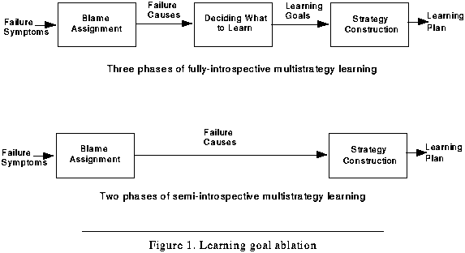 Figure 86. Learning goal ablation
One measure with which to test the hypothesis that introspection facilitates learning is to remove the goals from the introspective process above, leaving a more reflexive activity. That is, while holding all other variables constant, the system can be run with and without learning goals to determine the effect of introspection. Instead of using the explanation of failure created during the blame-assignment phase to post a set of learning goals that then direct the construction of a learning plan, the explanation can directly determine the choice of repair methods as shown in the lower portion of Figure 86. This short-circuited method is called semi-introspective multistrategy learning.(3)
Because the most meaningful comparison of the two types of learning is between their respective learning rates, rather than their relative system performance, the evaluation of each must be with respect to a base performance of the system with no learning. This requirement entails that three experimental conditions represent the independent variable. Holding steady all program parameters, the input, and the initial program-state, the first experimental condition includes learning goals, a second removes learning goals, and the third removes learning altogether. Section 9.2.1 on page 219 presents further details concerning the exact method by which learning is performed without learning goals.
The test of hypothesis number one includes a null hypothesis. If the learning rate with learning goals does not significantly improve the performance of the system compared to the learning rate without learning goals, then introspection does not facilitate learning. A possibility arises, however, that the bulk of the power of the fully introspective method actually resides in the blame-assignment side of the IML process depicted in the upper half of Figure 86. Blame-assignment is also introspective and has a reflective component. Perhaps Meta-XPs, rather than learning goals, provide the functionality responsible for effective changes in the BK. In any event, to determine fully the relative contribution to learning, both parts of the IML process (i.e., the case-based introspection side and the non-linear planning side) should be examined.
So although left for future research, to determine more completely the actual aspects of introspection that are most responsible for any utility gained during learning (and to safeguard the null hypothesis), the experiment should also perform the following two manipulations. First, by removing blame-assignment, the system maps failure symptoms directly to learning goals (see upper half of Figure 87). Secondly, to insure that an interaction between the two learning phases is not responsible for the effects, the experiment should include a fully-reflexive method. That is, the system maps failure symptoms directly to learning algorithms, hence non-introspective multistrategy learning (lower half of Figure 87). This chapter presents the first of the three potential manipulations (i.e., removing learning goals). Future research will investigate the other two.
Given negative learning interactions such as those demonstrated in Section 7.2, the experimental expectation is that fully introspective multistrategy learning will outperform semi-introspective multistrategy learning. Section 9.2 provides the experimental design, the data, and the results that bear on hypothesis number one.
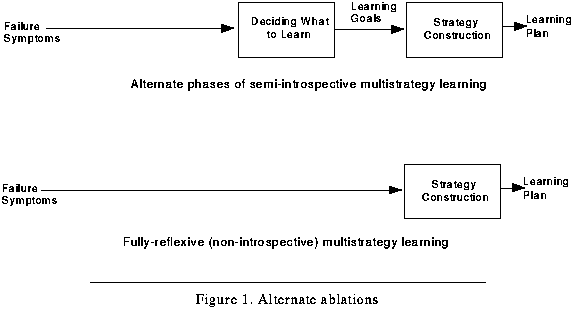 Figure 87. Alternate ablations
Previous chapters describe a model of introspective learning that constructs a learning strategy at a micro-level. The resultant learning plan consists of calls to machine learning functions from standard inventories and so appears to be an engineering approach to learning. In such light, the theory is a response to a computer science problem concerning the proper integration of machine learning algorithms in complex situations. And although the framework within which this introspective process operates is cognitively oriented (e.g., the theory emphasizes memory access rather than search), it is perhaps asking too much for the reader to accept the implementation as a theory of human introspection. Nonetheless, many aspects of the theory pertain to human behavior and cognition in the real world (e.g., the taxonomy of failure applies as equally to human reasoning failure as it does to logical errors of computation).
Despite the technical orientation, a useful cognitive science experiment is to examine whether the theory presented here could model a macro-level learning behavior. Of interest are the molar learning strategies exhibited by human novices as they acquire complex cognitive skills and domain knowledge. That is, we are interested in better understanding goal-driven learning at the level of deliberate behavior. This entails an approach where the learning goals are not micro-goals, such as the goal to reconcile an input with a conceptual category (at best this kind of a goal represents some lower level generalization process), but instead the learning goals represent explicit desires for knowledge change in the face of real-world learning problems.
Recker and Pirolli (1995) have shown that a Soar-based model of learning called SURF can explain individual differences exhibited by human subjects while learning to program in LISP using instructional text. The difference that accounted for much of the variability was self-explanation strategies. Those students who explained problems to themselves during comprehension of the instructions performed well on a subsequent performance task consisting of LISP programming exercises. The students who did not exhibit this behavior were not as likely to excel in the LISP task. The SURF model predicted such differences. The model took into account only domain-related elaborations; however, subjects exhibited other self-explanations that the model did not cover. In particular, some subjects seemed to exploit metacognitive feedback, like comprehension monitoring, in order to judge when to learn (Pirolli & Recker, 1994). If self-reflection on the states of a subject's comprehension of the instruction indicated an understanding failure, then this was sometimes used as a basis to form a learning goal.
These data are well-suited for implementation in the Meta-AQUA framework and have the virtue of already existing. An additional benefit is that both the data and the Meta-AQUA model arose independently. If Meta-AQUA can be changed with minimal effort, including the addition of the learning strategies suggested above, then there is evidence that IML theory is a reasonable model of introspection. In addition, the model gains credibility if it can be extended to a new performance domain: instructional text comprehension in addition to story understanding. If the changes to the model are significant, however, then the believability of our theory as an approximate model of human metacognition is lessened. Section 9.3 reports the outcome of this experiment.
This section presents the results of computational studies performed with Meta-AQUA to test the first hypothesis. Section 9.2.1 describes the independent variable used in this experiment. The program is run with learning goals, without learning goals, and with no learning in order to compare learning by direct mapping of repairs to learning arbitrated by goals. Section 9.2.2 describes the dependent variable (i.e., the measure chosen to evaluate learning). This measure quantifies a kind of "partial credit" for self-explanation by assigning points for generating questions, additional points for issuing any answer, and still more points for computing the correct answer. Next, Section 9.2.3 reports the data collected in the computational study. It establishes the claim that introspection facilitates learning by showing that the learning curve of fully introspective multistrategy learning indicates an improvement over the learning curve of semi-introspective multistrategy learning.
As discussed in Section 9.1.1, learning rates relative to a baseline no-learning condition are compared between a fully introspective and a semi-introspective version of Meta-AQUA. The independent variable that effects this change is the presence and influence of learning goals. The first experimental condition is called the learning goal (LG) condition and represents Meta-AQUA as described in Chapter VIII. The LG condition builds a learning strategy guided by the learning goals spawned by the IMXP that explained the failure and hence represents a loose coupling approach between fault (failure cause) and repair.
The second condition is called the random learning (RL) condition. Given the explanation of the causes of failure the system can directly assign calls to particular learning algorithms for each fault. The construction of the learning plan is then performed by a random ordering of these function calls, rather than by non-linear planning to achieve the learning goals. Without the learning goals, the RL condition represents a tight coupling approach, that is, a direct mapping from fault to repair.
The final condition is called the no learning (NL) condition in which Meta-AQUA performs story understanding, but if a failure exists, the system constructs no learning strategy. This condition represents the base line performance from which both the LG and RL conditions can be compared. Surprisingly, conditions exists for which no learning outperforms random learning (see Section 9.2.3.2 on page 224).
Holding all variables constant except the independent variables, Meta-AQUA is given input from the Tale-Spin problem generator and a dependent variable is measured. The next section describes the criteria by which the performance of the system is measured, thus determining the dependent variable.
In previous research, paraphrase and question answering tasks have been used to measure successful story understanding (e.g., Cullingford; 1978; Lehnert, Dyer, Johnson, Yang, & Harley, 1983; Wilensky, 1978; Schank & Riesbeck, 1981).(4) If a reader sufficiently understands a body of text, then the reader should be able to summarize the central points of the story and list the major events within the story. If the story is well understood, then the reader can answer questions concerning the events and relationships within the story. However, the measurement these researchers use is qualitative, rather than quantitative.
With story understanding programs such as BORIS (Lehnert et al., 1983), the researchers pose questions to the system and subjectively evaluate the answers to determine text comprehension effectiveness. But such evaluation is potentially biased because is it tempting to ask only those questions already known to be answerable. In contrast to externally posed questions, Chi (1995, Chi et al., 1989) reports that improved learning is correlated with human subjects who generate their own questions and explain the answers themselves (see also Pressley & Forrest-Pressley, 1985). This is the so called self-explanation effect. Thus, the ability of a system to pose self-generated questions both indexes actual understanding and simultaneously reduces the probability of asking only the easy questions.
Consider the following quote from Gavelek & Raphael (1985).
The ability to adjust cognition in order to improve comprehension is at the heart of the research presented here. Thus, simply being able to recognize that a gap exists in one's own knowledge, and to therefore ask the question "Why don't I understand this?" (Ram, 1991), is the first step to improving the understanding, rather than actually giving an answer. So, to evaluate the ability of the performance of the Meta-AQUA system, credit should be given for simply posing a question that deserves asking.
A basic evaluation measure is to count the number of questions answered correctly to ascertain an absolute measure of performance. However, human students who are asked questions on reading tests are sometimes given points for partial answers. As discussed in the introduction, unlike questions in mathematics that have a provably correct answer, answers to explanatory questions are difficult to judge in an absolute sense. To make a more realistic measure, the criterium to evaluate performance in comprehension systems such as Meta-AQUA should assign some credit for providing any answer to a question.
Therefore, the full evaluation metric is as follows. For each anomalous or interesting input in a story, a point is given for posing a question, an additional point is given for providing any answer whatsoever, and a third point is assigned for answering what the researcher judges correct. The sum of these three point values represents the dependent variable.
This section reports data from six experimental runs of Meta-AQUA. To serve as experimental trials and to minimize order effects, Tale-Spin generated six random sequences of Elvis World stories (see Section 8.3.2, "The Elvis World," starting on page 185). On each of these runs, Meta-AQUA processed a sequence three times, once for each experimental manipulation. The system began all runs with the same initial conditions. For a given experimental condition, it processed all of the stories in the sequence while maintaining the learned knowledge between stories. At the end of the sequence, the system reset the BK. The input size for a run varies in length, but averages 27.67 stories per run.(5) The corpus for the six runs includes 166 stories, comprising a total of 4,884 sentences. The stories vary in size depending on the actions of the story and Tale-Spin's randomness parameters (e.g., the probability that characters throwing an object will stop on the current toss), but average 29.42 sentences apiece.(6)
Run four is particularly interesting because the greatest number of negative learning interactions occur in this set. The input to run four consists of the 24 stories as enumerated in Table 9 (see Appendix C for a complete listing of all stories in this run). The stories contain a total of 715 sentences altogether. The average number of sentences per story is 29.8.
 Table 9: Results from run number four
Table 9: Results from run number four
-----------------------------------------------------------------------------------------------
Story Learning Questions Answered Correct Question Protagonist and
Number Episodes Posed Questions Answers Points Problem(b)
(sentences)(a) (LG RL NL) (LG RL NL) (LG RL NL) (LG RL NL) (LG RL NL)
-----------------------------------------------------------------------------------------------
1 (26) 1 1 0 1 1 1 0 0 0 0 0 0 1 1 1 Mom bored (balloon)
2 (19) 2 3 0 3 3 3 3 2 2 1 0 0 7 5 5 Mom bored (ball)
3 (38B) 1 1 0 1 1 1 0 0 0 0 0 0 1 1 1 Elvis jonesing
4 (51b) 0 1 0 1 1 1 1 0 0 1 0 0 3 1 1 Dad jonesing
5 (21) 0 1 0 1 1 1 1 0 0 1 0 0 3 1 1 Mom bored (ball)
6 (13) 0 1 0 1 1 1 1 0 0 1 0 0 3 1 1 Officer1 concerned
7 (13) 0 1 0 1 1 1 1 0 0 1 0 0 3 1 1 Dad bored (ball)
8 (21) 0 0 0 0 0 0 0 0 0 0 0 0 0 0 0 Dad thirsty
9 (44B) 1 2 0 2 2 2 2 1 1 1 0 0 5 3 3 Dad thirsty
10 (51B) 0 1 0 3 3 3 2 1 1 2 1 0 7 5 4 Dad bored (balloon)
11 (11) 1 2 0 2 2 1 1 1 1 1 0 0 4 3 2 Lynn bored (ball)
12 (3) 0 0 0 0 0 0 0 0 0 0 0 0 0 0 0 Officer1 concerned
13 (47b) 0 0 0 2 2 1 1 1 0 1 1 0 4 4 1 Mom thirsty
14 (15) 0 4 0 4 4 4 4 2 3 4 0 0 12 6 7 Mom bored (ball)
15 (28) 0 0 0 0 0 0 0 0 0 0 0 0 0 0 0 Lynn jonesing
16 (42B) 0 1 0 2 2 2 2 1 1 2 1 0 6 4 3 Dad jonesing
17 (45b) 0 0 0 2 2 1 1 1 0 1 1 0 4 4 1 Elvis jonesing
18 (21) 0 1 0 2 2 2 2 1 1 2 1 0 6 4 3 Officer1 concerned
19 (20) 0 0 0 0 0 0 0 0 0 0 0 0 0 0 0 Dad jonesing
20 (52b) 0 1 0 2 2 1 1 0 0 1 0 0 4 2 1 Dad bored (balloon)
21 (39b) 1 1 0 2 2 1 1 1 1 1 1 1 4 4 3 Lynn jonesing
22 (17) 0 2 0 2 2 2 2 1 1 2 0 0 6 3 3 Dad bored (ball)
23 (40B) 1 1 0 2 2 2 1 1 1 1 1 0 4 4 3 Elvis thirsty
24 (38b) 0 1 0 2 2 1 1 1 0 1 0 0 4 3 1 Mom bored (ball)
Total 715 8 26 0 38 38 32 28 15 13 25 7 1 91 60 46
-----------------------------------------------------------------------------------------------
Each numeric entry in Table 9 contains a value for each condition. The entries are triples of the form <LG, RL, NL>. For example, the second column represents the number of learning episodes for each trial and for each condition. Note that the third element of each triple in this column is zero since learning is disabled in the NL condition. The sixth column ("Question Points") contains the values for the dependent variable. These values represent the sums of the triples from the third, fourth, and fifth columns ("Posed Questions," "Answered Questions," and "Correct Answers," respectively).
In this run, random drug busts occurs 11 times (5 with the canine squad and 6 with a lone police officer).(7) Table 10 shows the distribution of protagonists within the stories of run four.(8) Dad was the most common protagonist, while Elvis, Officer1, and Lynn were tied for the least common.
Table 10: Main character distribution (run four)
----------------------
Protagonist Incidence
----------------------
Dad 9
Mom 6
Elvis 3
Lynn 3
Officer1 3
----------------------
Table 11 shows the distribution of problems encountered by these main characters. Boredom is the main problem encountered in Elvis World for run four, although considering the number of random drug busts, the household can hardly be classified as sedate. The main characters solved (or attempted to solve) seven of these boredom problems by playing with one of three balls and solved three by playing with balloons. The state of being concerned is the least recurrent problem exhibited in the run. This low frequency of occurrence is attributable to the constraint that Officer1 is the only character to whom Meta-AQUA can assign this state.
Table 11: Problem distribution (run four)
--------------------
Problem Incidence
--------------------
Boredom 10
Jones 7
Thirst 4
Concerned 3
--------------------
This section summarizes the results of the experiment. First, we will analyze the results of run number four, and then report a summary of all six runs. Table 9 totals the results in the bottom row. Table 12 presents these results. The Question Points column contains the value of the dependent variable. As shown in this column, Meta-AQUA performance under the LG condition is significantly greater than the performance under the RL condition. In turn, Meta-AQUA's performance under the RL condition far exceeds its performance under the NL condition.
Table 12: Summary of results from run four
----------------------------------------------------------------
Learning Learning Questions Answered Correct Question
Condition Episodes Posed Questions Answers Points
----------------------------------------------------------------
LG 8 38 28 25 91
RL 26 38 15 7 60
NL 0 32 13 1 46
----------------------------------------------------------------
Alternatively, if only absolute performance is considered as measured by the number of correct answers, then the differential is even greater, as shown in the fifth column. By this measure, the LG performance is more than three times the performance under the RL condition, whereas, the performance under the NL condition is insignificant. By looking at column four, however, the numbers of questions answered in some way (right or wrong), are roughly equivalent in the RL and NL conditions, whereas the ratio of the LG condition to either of the other two is 2:1. Finally, the number of questions posed are approximately equal across all three conditions.
In contrast to these differences in performance, Meta-AQUA attempts to learn from failure more than three times as often under the RL condition as under the LG condition. That is, learning is more effective with learning goals than without. In the RL condition, learning does not increase performance as much as does the LG condition, while concurrently, it leads Meta-AQUA to expend more resources by increasing the amount of learning episodes. Thus, the system works harder and gains less under RL than under LG. After a closer examination of the trend in the dependent variable for run number four, this section statistically quantifies the increase in learning effectiveness across the six runs.
Figure 88 shows the accumulation of question points across trials (i.e., stories) in run number four.(9) This figure illustrates a clear trend that is representative of all six runs; the behavior of the system as measured by the dependent variable is greatest under the LG condition, next best under RL, and worst under the NL condition. However, the trend does not hold for each individual trial. For example, Figure 89, the raw scores, shows that the NL condition actually outperforms the RL condition in trial number 14. The reason for this effect is that under worse-case conditions, if the interactions present between learning methods are negative, the performance may actually degrade. As a result, randomly ordered learning may be worse than no learning at all.
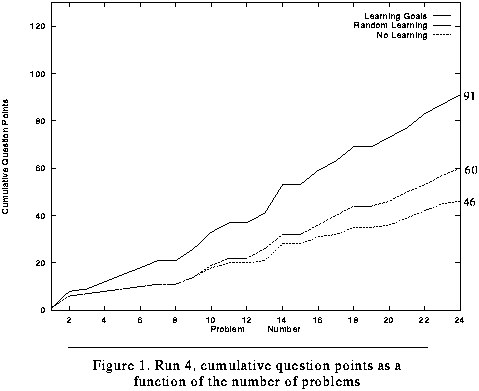 Figure 88. Run 4, cumulative question points as a function of the number of problems
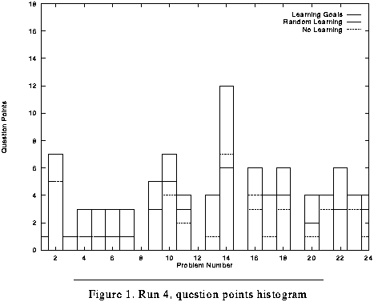 Figure 89. Run 4, question points histogram
The differences as a function of the independent variable are even more pronounced if only accuracy (the number of correct answers) is examined and partial credit ignored. Figure 90 shows that under the RL condition, Meta-AQUA did not answer a question correctly until trial number 10, whereas under the NL condition, it did not perform correctly until trial 21. On the other hand, because under the LG condition the system learned a new explanation early in trial number 1, it was able to answer a question by trial number two. This striking result was facilitated by the random order of input (i.e., the second trial happened to be about the same problem as the first) as well as by computational introspection. Figure 91 shows the raw absolute accuracy scores.
Table 13 summarizes the evaluation data from the six program runs. As is evident across all runs, the LG condition consistently outperforms the RL condition in the total cumulative question points. In turn, the RL condition outperforms the NL condition, despite the occasional poor performance due to negative interactions. As indicated by the standard deviations, the amount of differences between and within conditions exhibit high variability across runs.
Given these totals, the percent improvement for either learning condition over the NL base condition is simply the ratio of the difference in the base performance score and either score to the base score itself. Thus for run one, the ratio of the difference between the LG and NL conditions (35 points) to the NL condition (50 points) is .7, or 70 percent. Again, the improvement in performance for the LG condition is consistently higher than that of the RL condition. This difference is calculated in the final column. The differential is the percent improvement of the LG condition over the RL condition and is computed by the same measure as was the improvements in the individual learning conditions. That is, the differential is the ratio of the difference between the two improvements to the lower rate.(10) Thus, the differential between the LG rate of learning in run number one and that of the RL condition is the ratio of the difference (8 percentage points) to the RL percentage (62). Hence, the ratio is .129, or an improvement of nearly 13 percent.
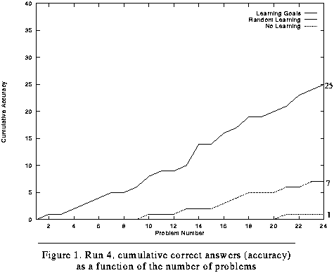 Figure 90. Run 4, cumulative correct answers (accuracy) as a function of the number of problems
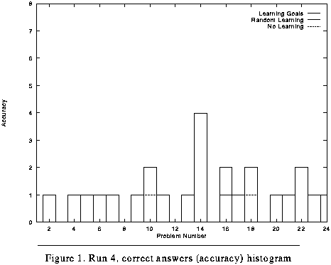 Figure 91. Run 4, correct answers (accuracy) histogram
Although the average differential between the two learning conditions (i.e., between fully introspective multistrategy learning and semi-introspective multistrategy learning) is more than 106 percent, this figure overstates the difference. The expected gain in learning is more conservative. The differential between the average LG improvement (102.70) and the average RL improvement (65.67) is a 56.38 percent difference. That is, across a number of input conditions, the use of learning goals to order and combine learning choices should show about 1.5 times the improvement in performance than will a straight mapping of faults to repairs when interactions are present.
Table 13: Summary of cumulative results
-------------------------------------------------------------------- Run % LG % RL Improvement Number(a) LG RL NL Improved Improved Differential % -------------------------------------------------------------------- Run 1 (34) 85 81 50 70.00 62.00 12.90 Run 2 (30) 106 98 43 146.51 127.91 14.55 Run 3 (28) 120 102 60 100.00 70.00 42.86 Run 4 (24) 91 60 46 97.83 30.43 221.43 Run 5 (22) 57 49 27 111.11 81.48 36.36 Run 6 (28) 103 66 54 90.74 22.22 308.33 Averages 93.67 76.00 46.67 102.70 65.67 106.07 Std. Dev. 21.72 21.31 11.34 25.43 38.17 126.59 --------------------------------------------------------------------
The results of this section show that learning is more effective with introspection than without, given the task of story understanding. Moreover, we have shown that because learning algorithms negatively interact, the arbitrary ordering of learning methods (i.e., as under the RL condition) can lead to worse system performance than no learning at all. Thus, an explicit phase to decide what to learn (i.e., via learning goals or an equivalent mechanism) is necessary to avoid such interactions in multistrategy environments. Without mediation between blame assignment and strategy construction, (i.e., without loose coupling) learning will not be effective given non-independent learning methods. The following section demonstrates that the content and process theories of introspective multistrategy learning presented in Parts Two and Three are sufficient to model introspection computationally.
The previous section tested hypothesis number one, examining Meta-AQUA from a computational perspective. This section tests hypothesis number two by examining Meta-AQUA to see whether it is sufficient for modeling human learners. Using protocols from the Pirolli and Recker study and taking the strategy categories as a given, the goal of this experiment is to begin to investigate the feasibility of modeling metacognitive behavior using IML theory. Although the ambitions of this section are more limited, for Meta-AQUA to fully model human metacognition it should be able to simulate the following imaginary sequence of reasoning. A graduate student fails his AI qualifying exam and must retake it in another six months:
As an experiment toward the goal of creating a system that reasons in similar ways to the graduate student, this section presents the results of an effort to simulate protocols of novices that are learning to program in LISP. This result is significant, not only because it is real instead of artificial data, but because the performance task is problem solving rather than story understanding. This bolsters the support for hypothesis two by showing that the theory is general enough to apply to more than a single task domain. After discussing the Pirolli and Recker data (Section 9.3.1) and the LISP programming simulation in Meta-AQUA (Section 9.3.2), a concluding section (Section 9.3.3) briefly discusses a separate IML-based implementation, called Meta-TS, that improves its ability to troubleshoot electronic circuits. This research adds support to the claim of generality of the theory.
Recker and Pirolli (1995) present a cognitive model based upon data from a study in which learners study instructional materials pertaining to LISP prior to problem solving in the programming domain. The instruction is embedded in a computer-based hypertext system, through which students navigate by clicking on mouse buttons. Learners attempt to understand the instructional material by explaining it to themselves, using a general learning strategy called self-explanation. After instruction, the subjects engage in problem solving in a recursive, LISP programming task using the CMU LISP tutor (Anderson & Reiser, 1985). The tutor provides intervention when the subjects make mistakes and eventually guides the students through each of the test exercises. It is important to note, then, that a given subject could actually finish a problem, thus producing a solution, without actually understanding the reasons why the solution is correct or sufficient for the problem.
Previous research has shown that a subject's engagement in self initiated explanation of examples appears to affect significantly a student's initial understanding and their subsequent problem-solving performance (Pirolli and Recker, 1994). Besides self-explanations, however, these studies report that introspective behavior also correlates with problem-solving performance. Between trials during the LISP programming tasks, subjects often generated reflective protocols spontaneously and without experimenter instruction or prompts. For example, subjects sometimes used awareness of comprehension failures as a cue to re-read example solutions or instructional text material. These kinds of learning strategies helped the subjects improve their subsequent performance by learning items such as new problem-solving operators.
Recker and Pirolli analyzed the subject protocols, thereby producing a categorization of the kinds of protocols subjects produce. In the most broad division, statements were of three types: Monitor, Domain and Strategy. Monitoring statements verbalize the subject's awareness of the level of performance or understanding. They typically assert whether they have a successful understanding, a failed understanding, or are unsure of their knowledge. Domain statements, on the other hand, concern the problem solutions and attempt to integrate them with their general understanding of the domain as acquired from the instructional text. Most protocols in this category either elaborate single problem solving episodes, or compare and contrast a recent one with either an earlier test problem, or an example problem from the instruction. The third protocol category, the Strategy type, is the major focus of this thesis.
Strategy statements are explicit statements concerning student intentions to learn. The seven subdivisions of this category (see Figure 92) relate how the students picture their performance with respect to their knowledge of the task and the instructions from which this knowledge was gleaned. An important goal in learning in the domain of programming is to make operational the declarative information in instructions, thus transforming propositional knowledge into specific procedures for writing code during the programming tests. The strategies in Figure 92 center on the above goal.
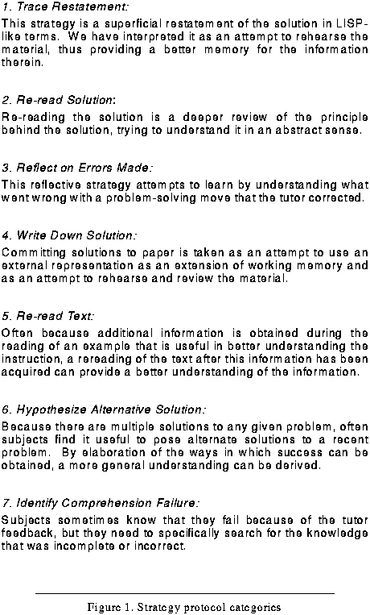 Figure 92. Strategy protocol categories
This section describes the changes to Meta-AQUA required to model a selected protocol fragment from the Pirolli and Recker data. This exercise not only supports the sufficiency criterion for the cognitive plausibility of Meta-AQUA, but it also explores the usefulness of the model in understanding the role of reflection in learning to program.
The focus of Meta-AQUA, however, is neither on the understanding tasks nor on the problem-solving tasks involved in programming. Rather, the central questions explored pertain to events that occur when problem-solving or understanding fail. As a result, Meta-AQUA places an emphasis upon examining a trace of the reasoning processes that preceded the failure in order to determine the causes of failure. Thus, the central concern of the model is reflective processing, similar to that which may underlie the kinds of reflection exhibited by the subjects in the Pirolli and Recker study.
Meta-AQUA's principal domain centers on understanding stories of drug smuggling using knowledge given from the original AQUA implementation in the domain of terrorism. However, in addition to the story-understanding mode, it also has an alternate problem-solving mode that models two agents, a smuggler and a drug-enforcement agent, interacting in a cat and mouse scenario. This mode was initially designed to test the potential of integrating understanding and problem-solving. When verifying a hypothesis in an understanding task an agent might actually devise a test through problem solving, and when trying to verify a plan in a problem-solving task an agent might verify it by running the plan to understand whether the plan met his expectation during execution in the world. This mode was modified to implement the LISP programming task in the Pirolli and Recker study.
We model the subjects as problem-solvers who plan to achieve programming goals. They then attempt to run the program and check whether it meets their expectations during execution time. IML theory's central notion of expectation failure provides a basis for modeling comprehension failures exhibited by the subjects. The changes to Meta-AQUA necessary to simulate a protocol in LISP programming study were slight. The major change was an addition of simple simulator for the LISP Tutor that provided feedback to the programmers. All other additions consisted of building the knowledge-representation frames for LISP functions, programming plans, and other objects in the programming world that the system processed (see Appendix D, "META-AQUA OUTPUT IN LISP PROGRAMMING MODE."). No IMXPs were added to the system for the modification.
Because Meta-AQUA is concerned with the interaction of multiple learning choices, we chose a protocol that combines three reflective strategy protocols. Subject AK88's protocol was taken from data reported in Pirolli & Recker (1994). The subject was given the task of creating a recursive LISP function, called Add1num, that would take as input a list of integers and letters, outputting as a result a list of only the numbers incremented by one. For instance, given the list `(1 3 a 4 b 1), the function should return the list `(2 4 5 2). Figure 93 details a fragment of the protocol from subject AK88 after performing this problem, but before the computer system loaded and presented the next problem.(11)
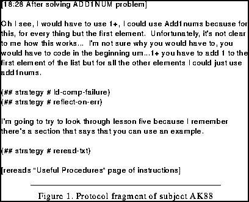 Figure 93. Protocol fragment of subject AK88
We interpret this protocol as being composed of three learning strategies. First, AK88 becomes aware that her comprehension of recursion is not correct. This is a strategy we call Identify Comprehension Failure. In Meta-AQUA this sequence is represented by the structure in Figure 94. The subject does not understand that the correct LISP function should add one (using the 1+ increment function) to the first item in the list if it is a number and then cons that to a recursive call of the function on the rest of the list. Instead, the student appears to be confused about the recursive part of the function, preferring to use the increment function (1+) repeatedly. See Figure 95 for the correct code that should be generated and the possible construction that the subject is attempting to use.
Secondly, to understand this fact AK88 tries to reflect over the error made after realizing that there was indeed a comprehension failure (see node labeled Reflect on Error in Figure 94). Thirdly, the subject is reminded of a prior example in the instructional text and decides to review it by rereading the text (node labeled Reread Text in Figure 94). These fragments are particularly interesting, not only because they are consistent with much of the Meta-AQUA implementation and theory, but because they show a composite strategy that combines three separate components. Currently, Meta-AQUA was only able to simulate the construction of the top one third of the structure shown in Figure 94. Appendix D shows output from the program and the goal structure that is pursued during execution of the simulation. Figure 96 shows three of the frame definitions used to represent the flawed iterative function presumed to be considered by subject AK88.
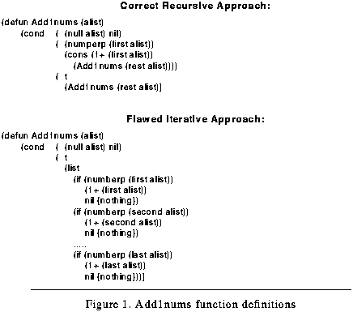 Figure 95. Add1nums function definitions
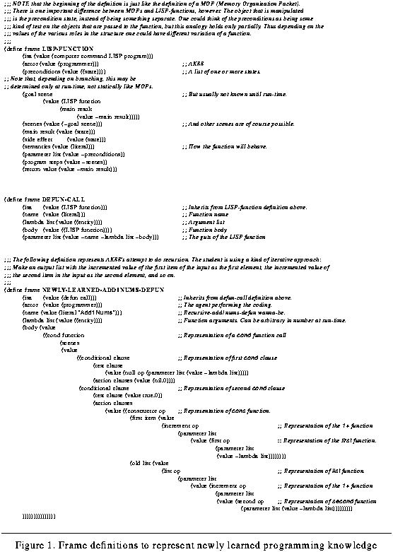 Figure 96. Frame definitions to represent newly learned programming knowledge
Although future research is necessary to firmly validate this approach, the results look promising. Meta-AQUA modeled most of the protocol sufficiently, both with the subjects cognitive task (problem-solving) and the subject's meta-cognitive task (strategy construction). However, because the problem-solving mode of Meta-AQUA is not fully implemented the simulation of the programming task was overly simplified. And because the system's memory module is incomplete, the section of the protocol pertaining to the subject's remindings of a previous problem solving episode (i.e., a programming problem) was not finished. Therefore, to finish this trial with Meta-AQUA, the system must be programmed with both a more robust problem-solving process and a more plausible memory. Although the above implementation is preliminary, the next section adds to this evidence in support of the sufficiency claim.
Based on IML theory, we have implemented an independent system that simulates human protocol data involving novices that learn to troubleshoot faulty circuitry by modifying, acquiring and deleting associations and heuristics used to formulate shallow explanations for circuit board behavior. The system, called Meta-TS(12) (Narayanan, Ram, Cohen, Mitchell & Govindaraj, 1992; Ram, Narayanan, & Cox, 1995), models the learning extracted from protocols of actual novice troubleshooters at an electronics assembly plant in Atlanta, Georgia. The model is based on protocol analysis of over 300 problem-solving episodes gathered at the in-circuit test facility of an NCR plant located near Atlanta, GA (Cohen, 1990; Cohen, Mitchell & Govindaraj, 1992).
The problem-solving module of Meta-TS uses different types of knowledge and test procedures to hypothesize the cause of a failure and to suggest repair actions for that failure. Based on our data from the human operators in the NCR plant, Narayanan et al. (1992) categorized diagnostic knowledge into two broad types. Associations are simple rules which directly map a particular symptom to a specific diagnosis. This type of knowledge is context-sensitive and is indexed by board type. Heuristics are standard rules of thumb. These rules are not context-sensitive and are applicable across board types. Heuristics are used by the operator for troubleshooting when there is no known association for a given problem situation. This knowledge determines the series of standard operating procedures performed in troubleshooting a faulty circuit board. Since the problem-solving module relies on associative and heuristic knowledge, the learning module must, in general, be able to acquire, modify, or delete such associations and heuristics through experience.
The introspective learning module of Meta-TS has several strategies for learning associative knowledge for the troubleshooting task, including unsupervised knowledge compilation, supervised learning from an expert, postponement of learning goals, and forgetting invalid associations. The first strategy is that of unsupervised, incremental inductive learning, which creates an association when the problem-solving module arrives at a correct diagnosis using heuristic knowledge. The introspector compiles the heuristic knowledge into an association. The second learning strategy creates a new association through supervisory input. This strategy is triggered when the system arrives at an incorrect solution using heuristic and/or associative knowledge. A third learning strategy is that of postponement. This opportunistic strategy is triggered when the system is unable to get immediate input from a skilled troubleshooter. The system posts a learning goal, keeps track of the reasoning trace for the particular problem-solving episode, and asks questions at a later time to gather appropriate associative knowledge. Two deletion strategies remove associative knowledge when it is no longer valid. The first strategy uses expert input to delete associations, and is invoked at the end of every problem-solving episode. The second deletion strategy is unsupervised and is selected when Meta-TS arrives at an incorrect solution and the reasoning trace shows that a single association was used in arriving at the solution.
Meta-TS was evaluated using 42 actual problem-solving episodes gathered at the electronics plant over a 2-month period. The problems dealt with various types of resistor failures and are representative of the types of problems encountered over the period. To evaluate the learning methods, we tested the following five conditions on the 42 test problems.
Each of these conditions were evaluated quantitatively for speed and accuracy on the 42 test problems, and also qualitatively by examining the content of the learned knowledge and details of the solution process. Figure 97 shows the cumulative accuracy of the system for the various conditions. The H condition arrived at the correct diagnosis in 86% of the 42 problems. The L42 condition arrived at the correct diagnosis in 81% of the problems. The values for the L20, L, and NL conditions were 76.8%, 76%, and 71% respectively. Figure 98 compares the speed of the solution process (measured by the number of intermediate steps) with the various learning conditions relative to the hand-coded condition. The L20 and L42 conditions consistently arrive at the diagnostic result faster than the H condition. The L condition takes about 20 problem episodes to reach the same speed as that of the H condition and then consistently arrives at the diagnostic result faster than the H condition. At the end of the 42 problem episodes, the ratios of the learning conditions to the hand-coded conditions are: 1.52 (L42 to H), 1.24 (L20 to H), and 1.06 (L to H).
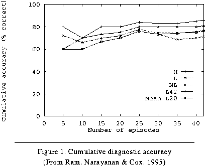 Figure 97. Cumulative diagnostic accuracy
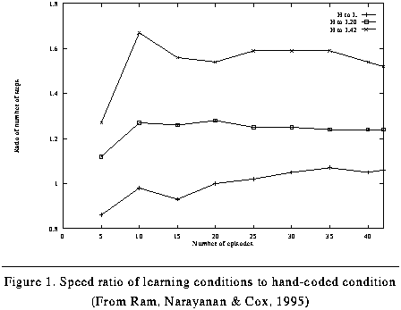 Figure 98. Speed ratio of learning conditions to hand-coded condition
The multistrategy learning module in Meta-TS clearly contributes to enhanced system performance in the troubleshooting task. In comparison with the non-learning system with no hand-coded associations, the associative knowledge learned by Meta-TS increases the accuracy of the diagnostic result and speeds up the problem-solving process. The performance of Meta-TS further increases when it is trained on similar problems before it is applied to novel problems. The associative knowledge learned by Meta-TS enables it to arrive at the same solution as that of the system with the hand-coded associative knowledge between 89% and 94% of the time.
Both the Meta-AQUA and the Meta-TS implementations have demonstrated to be sufficient models to approximate the learning of novices in a problem-solving situation. This validates the theory in a number of ways. First, the implementations have simulated real human data rather than simply appealing to the intuition of the reader. Secondly, the theory has been applied to three different task domains: learning to understand stories, learning to program a computer, and learning to troubleshoot electronic circuits. It therefore represents a general approach to learning rather than a specific one.(13) Third, the theory works using both deep causal explanations (as with the Meta-AQUA implementation) and shallow causal reasoning (as with Meta-TS). Moreover, results from the metacognition literature also support the idea that such a model is a reasonable one with which to understand deliberate learning. In particular, Brown (1987), Nelson & Narens (1994), and Weinert (1987) all make strong claims that metacognitive activities are intimately and positively interrelated with learning and understanding processes. Given these results, IML theory can be considered a reasonable model with which to understand metacognitive processes in human learning.
The experiments discussed in this chapter provide a number of results that support the hypotheses established at the beginning of this dissertation. Evaluating Meta-AQUA with and without learning goals generated empirical results indicating that computational introspection (as defined in IML theory) facilitates the learning process. In particular, the results lead to the conclusion that the deciding to learn stage that posts learning goals is a necessary stage if negative interactions between learning methods are to be avoided and if learning is to remain effective. The chapter has also provided a novel quantitative measure with which to evaluate the comprehension process. As dependent variable, this partial credit metric provides rewards for both posing questions and giving some type of answer, as well as getting the answers right. Finally, the last section showed the generality of IML theory by reporting two additional tasks to which the theory applies (programming in LISP and electronics troubleshooting). The minimal modifications necessary to get Meta-AQUA to cover the LISP learning protocol fragment suggests that IML theory is a sufficient model of introspection. The results presented in this chapter also support the hypothesis that the failure taxonomy as described in Section 3.2 on page 45 is a reasonable categorization for both artificial and natural reasoners because these failure types are instrumental in the Meta-AQUA system from which the results were obtained. In particular, see the discussion in the summary section of Chapter III.
Research concerning introspection has long been controversial (e.g., see Boring, 1953; Nisbett & Wilson, 1977 for objections to such research). In the early days of psychology, trained introspection was assumed to be the proprietary scientific tool of the psychologist when "objectively" studying the mind.(14) The behaviorists tried to erase all scientific association with introspection by claiming not only that learning should be examined without the use of such introspective methods (e.g., Watson, 1919), but moreover that learning should be explained without reference to any intervening mental variables whatsoever (e.g., Skinner, 1950, 1956). Under the banner of metacognition research, however, interest has recently returned to the study of introspection, second-order knowledge, and their roles in cognitive activities (see Section 11.2 on page 272(15)). Yet, to believe that introspection is a kind of computational panacea is a deceptive assumption. Wilson and Schooler (1991) have empirically shown that conditions exist under which introspection actually degrades specific performance (e.g., preference judgements). In the context of story understanding, Glenberg, Wilkinson, & Epstein (1982/1992) reported that human self-monitoring of text comprehension is often illusory and overestimated, especially under the conditions of long expository text. Likewise, computational introspection is not effective under many circumstances, and, given the demonstrated limitations of human introspection, IML theory tries not to overstate its scope. Rather, as asserted at the very beginning the thesis, one of the goals of this research is to determine those conditions under which introspection is useful, and those under which it is not.
Because of the considerable computational overhead involved in maintaining a reasoning trace, performing blame-assignment, spawning learning goals, and constructing a plan with which to pursue such goals, the benefits of using introspection must be substantial to justify the costs.(16) Furthermore, under extremely complex situations or in informationally impoverished circumstances, deciding on an optimal learning goal is certainly intractable. In such situations, it may be more beneficial to proceed without further reasoning, rather than to attempt to understand the exact causes of the failure. Knowing when a problem is worth pursuing is itself an important skill to master for an intelligent system. Identifying the most appropriate conditions for the use of an introspective approach is therefore a desirable research goal. To establish only that introspection facilitates learning and that the model of introspection has some quality of reasonableness is not satisfactory. A full evaluation will not only show the hypothesis to be valid under a particular circumstance, but will demonstrate the conditions under which these hypotheses hold. Although an experimental inquiry into these conditions will be left for future research, a number of remarks can be made at this time.
If the distributions of the kinds of failures generated by the performance task change the nature of the differences in the learning curves generated in the experiments used to establish hypothesis number one (see Section 9.2.3), then applicability conditions can be established that predict when the utility of introspection exceeds its cost. The space of applicability conditions for introspection is expected to emerge from the causal factors as organized by Table 5, "Detailed taxonomy of causes of reasoning failure," on page 53. It has already been shown through the existing implementation that introspection in certain circumstances is tractable. Thus, a lower bound is already available. It is clearly not possible to reason in any effective manner if all possible failures occur at once. So, an analysis of the interaction of the causal types in the table should result in a set of complex failures that can be programmed into Tale-Spin in order to produce various distributions of errors. Meta-AQUA is expected to have difficulty learning from some of the failure combinations within these error distributions. As with the ablation study, measures with and without introspection provide the independent variable for the evaluation of learning. The results should itemize the conjunctions of failure from which it is impossible to recover and those for which a simpler reflexive or tightly coupled approach is more suited.
An additional reason that we expect such a test to work is that, as already demonstrated by this chapter and by Chapter VII, all learning methods are not independent. When they interact there will be substantial detriment to performance. Thus, one simple study would be to add a parameter to Tale-Spin that can limit the types of failures to those whose learning repairs are known not to interact. In this condition, the learning curves for the LG and RL conditions should not significantly differ. This will formally establish that at least one condition exists within which the utility of learning goals is lessened. However, to establish the quantitative trade-off between the utility of introspection and the cost, a more formal estimation for the cost must be constructed.
In the interim, a potential heuristic for deciding when to use an introspective approach is to qualitatively ascertain whether or not interactions between learning mechanisms available to the learner exist. If they exist, then the approach should be applied, otherwise a more reflexive approach is licensed. In speculation, another potential heuristic for determining that introspection is a win is to use a threshold for the number of failure symptoms above which introspection will not be attempted. Through experimentation, this threshold number should be obtained empirically given a distribution of known problem types and a random selection of problems from the distribution. The identification of such heuristics will enable the practical use of introspective methods in systems that cannot afford to squander precious resources with intractable computation.
Table of Contents
 Next Chapter
Next Chapter